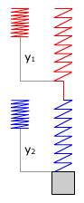
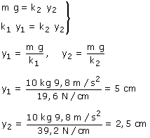

 |
|
El muelle 2 tira del bloque hacia arriba con una
fuerza Fe2 El muelle 1 tira del muelle 2 hacia arriba con una fuerza Fe1 y el muelle 2 tira del muelle 1 hacia abajo con una fuerza Fe1 (Acción y reacción) Condiciones de equilibrio para bloque y muelle 2: |
 |

Observa que se estira más el muelle cuya constante es menor